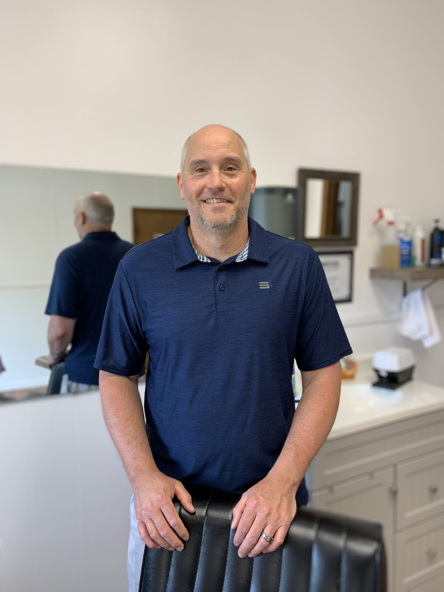

About
Get to know Todd the Barber
For over a decade Todd Earnhardt has been the owner and a Master Barber at Mocksville Barbershop. Todd enjoys working with his clients to create unique looks that help them feel great. He specializes in any kind of haircut ranging from business cuts, flat tops, to fades. Todd creates a relaxing, stress free environment for his clients and looks forward to making you look and feel your best.
Outside the Barbershop
When Todd isn’t working his magic in the Barbershop, he can be found spending time with his family, gardening, surf fishing along the North Carolina coast, or chasing Whitetails in the Mid West.